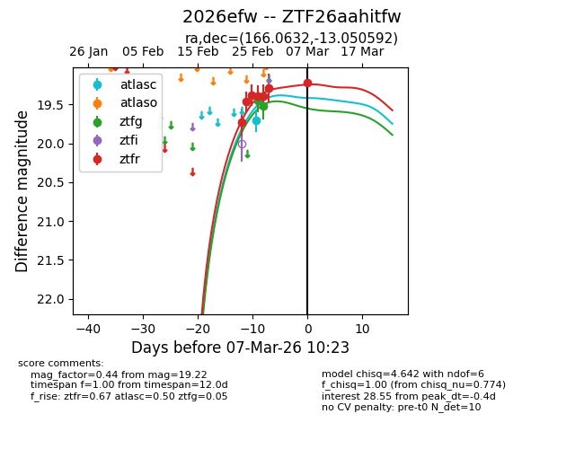
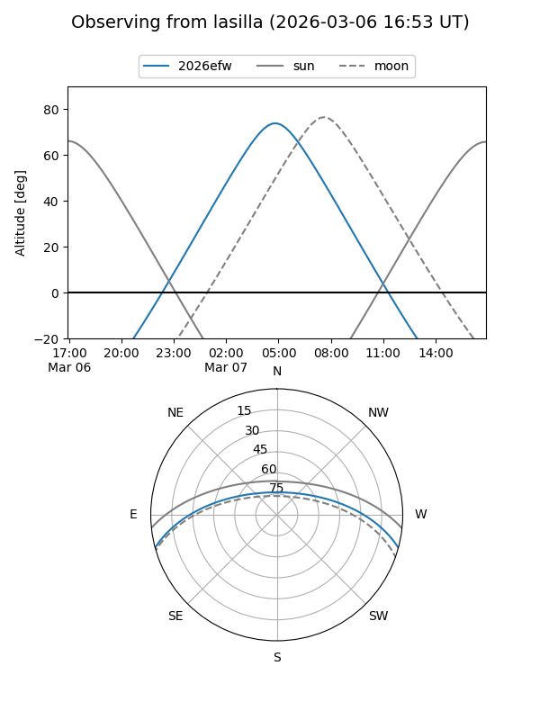
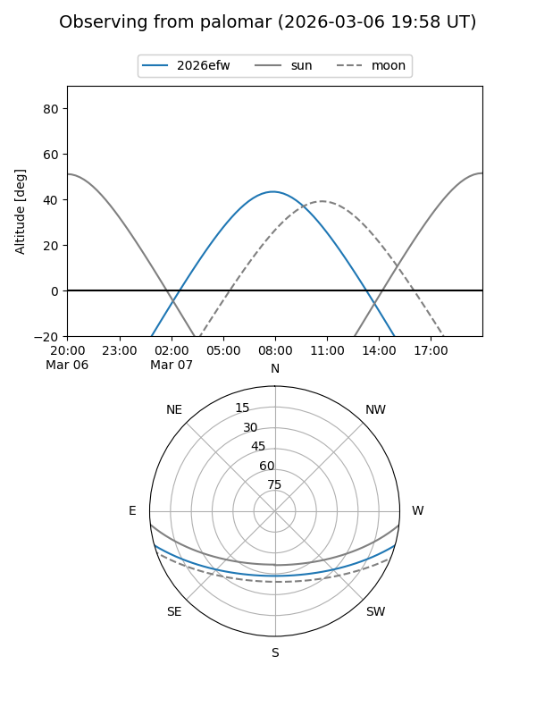
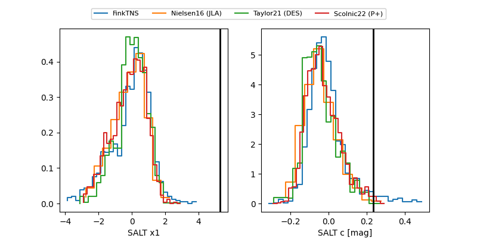

2026efw
Target 2026efw at 2026-03-07 10:24
Aliases and brokers:
FINK: link
Lasair: link
ALeRCE: link
TNS: link
YSE: link
alt names
ZTF26aahitfw (ztf,fink_ztf)
2026efw (tns,yse)
Coordinates:
equatorial (ra, dec) = 166.0632,-13.05059
equatorial (HMS+DMS) = 11:04:15.17,-13:03:02.13
galactic (l, b) = (266.6141,+42.13900)
Flags:
Photometry:
last atlasc=19.71, ztfg=19.52, ztfr=19.22
1 atlasc, 2 ztfg, 7 ztfr detections
Lightcurve

Visibility


Additional plots
